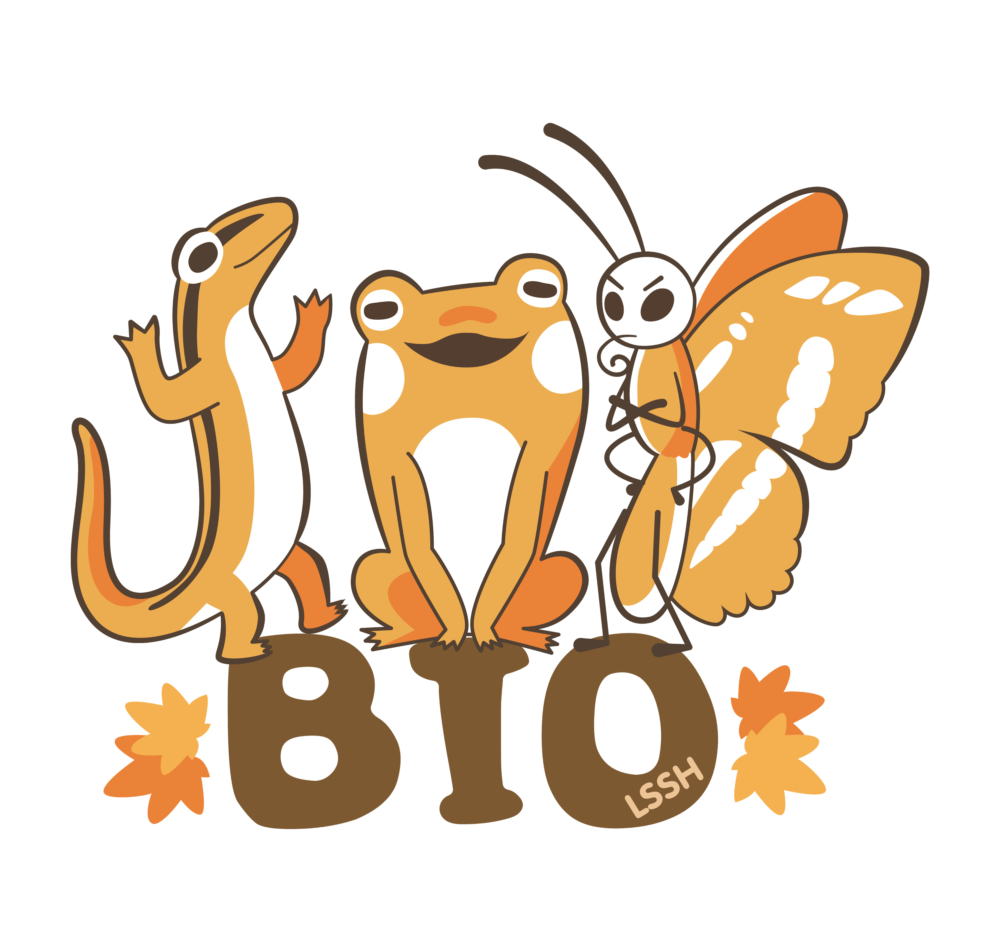

整理可用素材
會使用學生德行自評表、匯入範例、校內評語代碼與歷屆評語，建立學生個別化資料來源。
製作者：臺北市麗山高中林獻升老師製作

老師完成研習後，應能把「以往怎麼寫」轉成「以後可以穩定複製的工作流程」。
會使用學生德行自評表、匯入範例、校內評語代碼與歷屆評語，建立學生個別化資料來源。
會用 GPTs、Gemini Gem 或本機評語生成系統，將關鍵詞、觀察紀錄與特殊表現改寫成正式評語。
能用自己的舊評語、語氣偏好與校內格式，建立專屬的德性評語輔助 AI，而不是每次從零開始。
下列資料可分成四類：工具、學生資料、提示詞、評語資料庫。研習時建議由上而下依序示範。
資料庫不是答案庫，而是幫老師找到詞彙、句型與分類角度。
| 資料來源 | 適合用途 | 研習提醒 |
|---|---|---|
| 麗山高中導師評語對照表 | 快速選擇性情、向學、進取、紀律、交友、服務、擅長等評語代碼。 | 每位學生可抓 1 至 3 個最貼近的代碼，再用導師觀察補足個別差異。 |
| 導師評語參考文本 | 依成績表現、幹部表現、人際互動、特殊活動等面向找句型。 | 適合改寫成自己的語氣，不建議原句大量複製。 |
| 德性評語總整理 | 提供正向特質、責任感、服務精神、領導能力、學術能力等語庫。 | 可用來補詞彙，但仍需加入學生具體事件。 |
| 網路德性評語總集合 | 提供大量常見評語句型，適合初學者找靈感。 | 部分語氣較國中小或較制式，高中導師使用時需提高成熟度與真實感。 |
全程可安排 90 至 120 分鐘，老師最後應完成一位學生的德性評語與一段特殊優良表現。
用學生德行自評表或 Excel 匯入範例蒐集事實：幹部、服務、社團、競賽、學業、生活常規與特殊表現。先求資料具體，不急著寫成漂亮文字。
從校內評語對照表中選 1 至 3 個最準確的描述，例如「溫文謙和、勤學用功、服務盡責」，作為評語的骨架。
將姓名、性別、特質、職務、活動、競賽、自評資料輸入系統，先產出基礎評語，再補充導師自己的觀察。
請 AI 做「專業化修飾」而不是「重新捏造」。提示詞中要明確要求保留事實、維持導師語氣、區分德性評語與特殊優良表現。
確認稱謂、事實、敏感資訊、字數、重複句、是否太像 AI、是否能被學生與家長接受。最後再貼入校務系統。
關鍵不是把 AI 設成「會寫評語」，而是讓它知道你的評語原則、常用語氣、資料來源與禁止事項。
已建立的 Gemini Gem，可直接拿來測試德性評語優化與特殊優良表現改寫流程。
已建立的 ChatGPT GPTs，可直接貼入學生資料、導師觀察與需要保留的語氣範例。
適合把評語範例、提示詞與參考資料集中在同一個知識庫中，再進行對話式查詢與改寫。
若要把歷屆評語放入 GPTs 或 Gem，建議移除學生全名、座號、特殊身分、健康、家庭、心理與其他敏感資訊。可用「學生A」「學生B」取代真名，只保留書寫風格與句型。
你是一位熟悉台灣高中導師工作、108課綱核心素養與校務系統評語格式的「高中導師德性評語與特殊優良表現撰寫助理」。 你的任務不是代替導師判斷學生，而是協助導師將既有觀察、學生自評資料、幹部服務紀錄、競賽活動與校內評語代碼，整理成正式、自然、具教育性的文字。 請遵守以下原則： 1. 優先保留導師原始觀察與學生具體行為，不要捏造未提供的事實。 2. 評語語氣需正式、溫暖、具高中導師口吻，避免過度浮誇、空泛或明顯 AI 感。 3. 德性評語著重人格特質、學習態度、人際互動、服務精神與成長建議。 4. 特殊優良表現著重具體事蹟、職務、活動、競賽、服務與成果，避免與德性評語重複。 5. 若資料不足，先根據現有資料產生可用草稿，再列出可補充的關鍵資訊。 6. 不輸出涉及家庭背景、健康、心理、懲處細節或其他敏感個資的內容，除非導師明確要求且符合教育專業判斷。 7. 最後請提供「德性評語」「特殊優良表現」「可再補充資料」三個欄位。
請根據下列資料，協助我產生一位高中學生的德性評語與特殊優良表現。請保留具體事實，語氣正式溫暖，不要捏造未提供的內容。 學生姓名： 性別與稱謂： 評語代碼或特質詞： 個性與人際互動： 學習態度與學業表現： 幹部、服務或小老師經歷： 社團、競賽、活動或特殊優良表現： 導師補充觀察： 需要委婉提醒或期許的方向： 希望模仿的導師語氣範例： 輸出格式： 1. 德性評語：150至250字。 2. 特殊優良表現：條列具體事蹟，避免重複德性評語。 3. 可再補充資料：列出若要更個人化，還需要補充哪些資料。
建議每位老師使用一位已去識別化的學生案例操作，研習結束即可帶走可用成品。
打開 Excel 範例，觀察欄位如何把「學校服務、社團表現、學業表現、生活常規、科學展覽」分開。請老師把自己的學生資料整理到相同欄位。
輸入學生姓名、性別、評語代碼、幹部與特殊表現，產出基礎評語。接著補上一句導師親自觀察，讓文字不只像範本。
把初稿貼到 GPTs 或 Gemini Gem，要求 AI 保留事實、優化語句、分開輸出德性評語與特殊優良表現，並檢查是否過度誇飾。
此例示範如何把零散資料轉成可送出的文字。實際使用時請依學生真實情況調整。
特質：溫和樸實、勤學用功、服務盡責。擔任衛生服務隊，協助環境打掃；生物社長，辦理採集活動；段考經常前三名；準時到校，無缺曠紀錄；校內科展特優，臺北市科展特優。
可先寫德性與學習態度，再寫服務與特殊表現，最後以期許收束。例如：「你個性溫和樸實，待人誠懇有禮，平日能自律安排學習與班級事務……期許未來持續保持探索精神，將研究能力延伸到更深入的學習挑戰。」
AI 生成後一定要人工檢查。勾選清單可作為研習最後 10 分鐘的同儕互評依據。